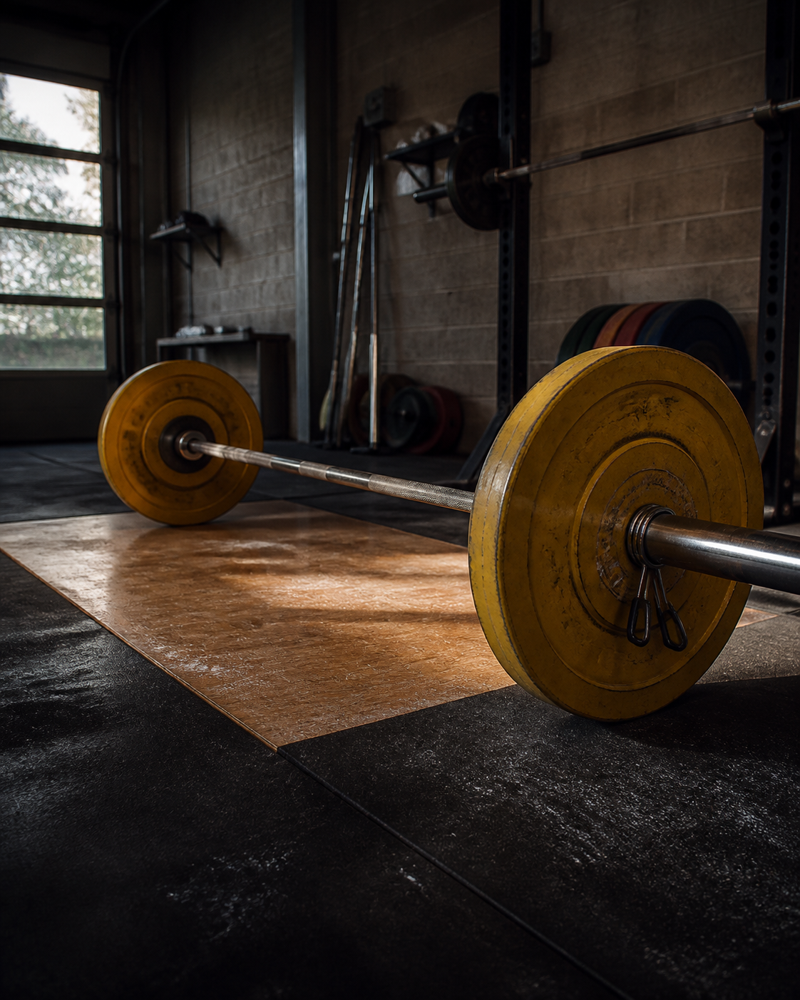
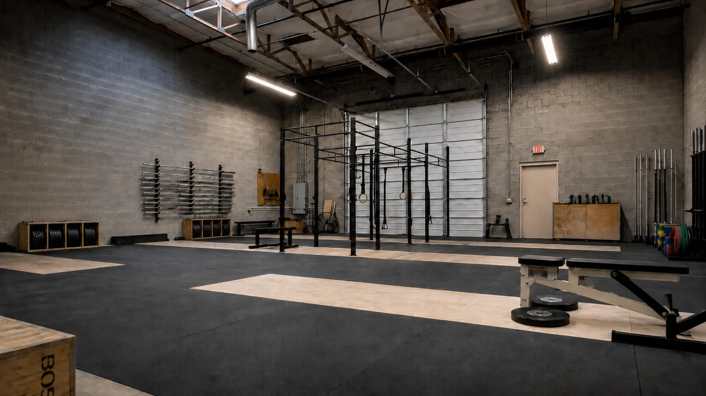
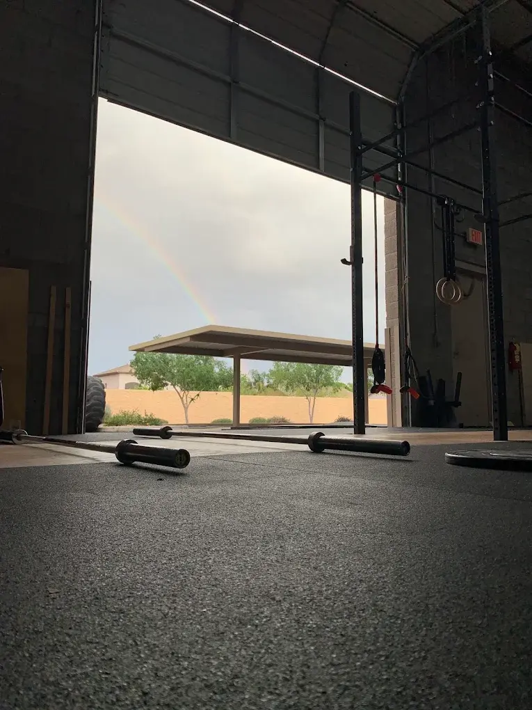
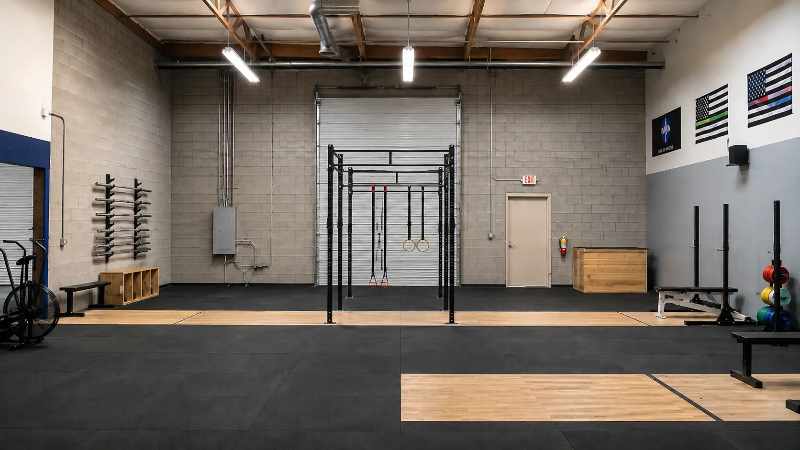

Built for Phoenix weightlifters.
Atlas was created to give Olympic weightlifters in Phoenix a space centered specifically on the way they train.
Olympic weightlifting in Phoenix
Atlas Barbell Club is a Phoenix gym centered on Olympic weightlifting. Train with Atlas programming, work directly with a coach, or bring your own plan and use a space built around the snatch and clean and jerk.
Google reviews See what lifters say
Platform standard
Built around Olympic weightlifting.
Platforms, bars, open floor space, and the equipment used throughout a weightlifting session.
Atlas Barbell Club is a Phoenix training space centered on the snatch, clean and jerk, and the strength work that supports them. The gym is designed for athletes who want to spend their training time around Olympic lifting, whether they follow Atlas programming, work directly with a coach, or already have a plan of their own.
The goal is not to make every athlete train the same way. It is to give lifters a useful place to train, access to coaching when they want it, and enough flexibility to choose how involved they want Atlas to be in their programming.
Atlas was created to give Olympic weightlifters in Phoenix a space centered specifically on the way they train.
Olympic lifting first. The competition lifts sit at the center of the room.
Coaching when it matters. Technical details get attention when athletes need another set of eyes.
Room to choose. Use Atlas programming, coaching, or open gym access based on your training.
What we have
The floor is organized around the work weightlifters regularly do: snatch, clean and jerk, squats, pulls, positional work, and accessory training.
Atlas is a dedicated place to train the competition lifts, build strength, and work through the details that support better sessions.



Dedicated floor space for snatch, clean and jerk, pulls, and positional work.
Olympic weightlifting bars used throughout regular training sessions.
Plates available for the lifts, squats, pulls, and accessory work.
Blocks available for lifts from height, pulls, and technical position work.
Rack space supports squats, presses, pulls, and strength work around the lifts.
Accessory and mobility tools support warm-ups, positions, and session prep.
What we offer
Different athletes want different levels of structure. Atlas supports team programming, individual coaching, and independent open-gym training.
Team Programming
Atlas team programming provides a shared weekly structure built around Olympic lifting technique and strength development. Sessions can include the competition lifts, variations, squats, pulls, and accessory work depending on the phase of training.
It is an option for athletes who want their training planned for them while still having room for individual feedback and adjustments.
Programming can account for meet timelines, heavier training phases, attempt preparation, and individual feedback as competition approaches.
A repeatable weekly structure gives newer lifters more opportunities to practice the competition lifts without having to piece together every session on their own.
Coaching
Individual coaching is available for athletes who want more direct feedback on technique, positions, training decisions, or preparation for competition.
The amount of support can vary with the athlete. Some may need help learning the lifts, while others may want another set of eyes on specific technical or programming problems.
Review timing, bar path, footwork, turnover, and receiving positions.
Address range-of-motion limitations when they interfere with positions used in the lifts.
Adjust training based on experience, schedule, current goals, and how the athlete is responding.
Help athletes prepare for the practical demands of entering and navigating a weightlifting meet.
Open Gym
Open gym is for lifters who already have a program, work with an outside coach or online coach, or simply prefer to manage their own training. You can use the Atlas weightlifting floor without having to follow Atlas programming.
If you decide you want additional feedback, coaching can be arranged separately. The open-gym option itself is intentionally flexible.
Open gym gives independent lifters access to a space centered on Olympic weightlifting while allowing them to keep the programming and coaching relationships they already use.
Coach Shen leads the day-to-day coaching approach at Atlas, with an emphasis on understanding the positions and movement demands of Olympic weightlifting rather than treating every lifter exactly the same.
COACH SHEN
Stronger togetherQualifications
Coaching philosophy
Atlas coaching is centered on helping athletes understand what they are trying to do in each lift, why a position matters, and how to make technical work usable under load.
The goal is durable progress: better positions, clearer feedback, smarter training decisions, and movement that supports the athlete beyond one heavy attempt.
Technique and positions
Olympic lifting asks athletes to coordinate strength, speed, mobility, and timing through specific positions. Coaching may therefore include work on ankles, hips, front rack, overhead stability, bar path, timing, footwork, or receiving positions depending on what an athlete needs.
Mobility
Technique
Positions
Mobility creates access to usable receiving positions.Technique
Quality reps build long-term strength.Strength
Training transfers when positions are repeatable.Training influences
Weightlifting methods are often described using national labels such as Bulgarian, American, or Chinese. Those labels are useful shorthand, but they cover many coaches, athletes, and programs rather than one universal method. Atlas uses the comparison to explain the ideas that influence its own coaching.
Often associated with very high specificity, frequent exposure to heavy classical lifts, and relatively low exercise variation.
Often more varied, using periodization and a broader mix of intensity, volume, strength work, and technical exercise selection across longer cycles.
Highly technical, often using detailed accessory work, flexibility, positional strength, and technique refinement to make the lifts adaptable across athletes.
The best description of a gym usually comes from the people who spend time training there. Real member quotes can be added here when Atlas is ready to publish them.
Start training
Tell us what you are looking for: team programming, individual coaching, open gym, or simply a first visit. We can help you figure out the most useful place to start.
Ask about trainingHours
Questions before you visit?
Email Atlas about team programming, coaching, open gym, visiting the facility, or finding the right way to start.
hello@atlasbarbellclub.comLocation map
Atlas Barbell Club - Phoenix, Arizona